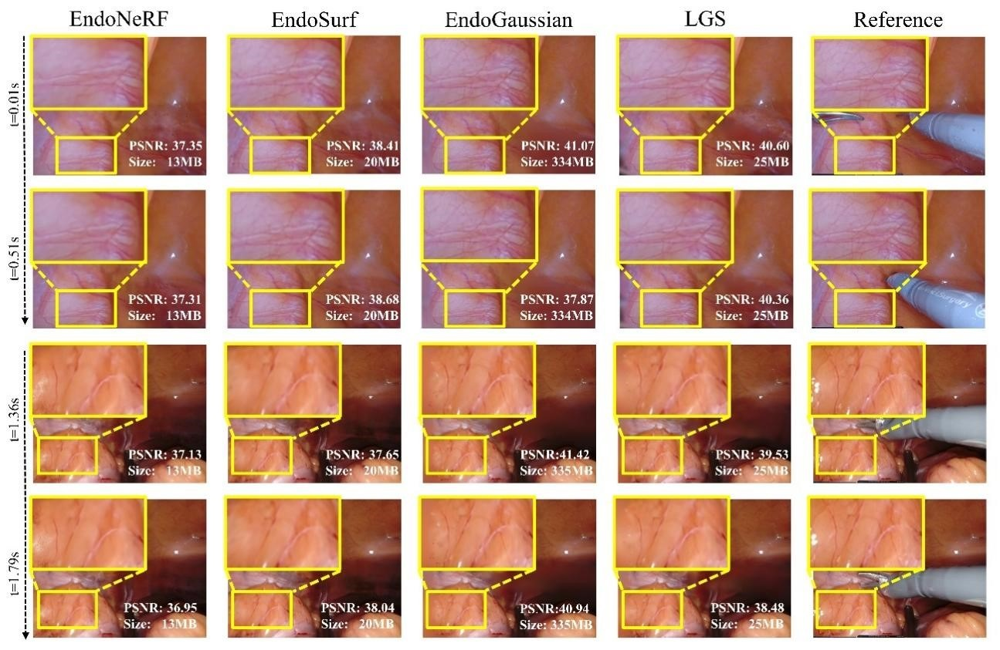
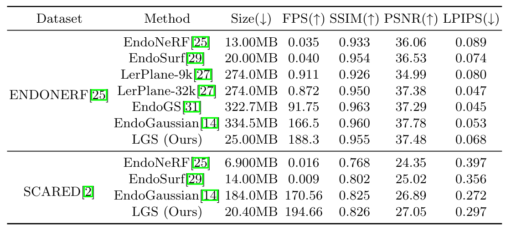

Network

Overview of LGS:(a) Deformation-Aware Pruning, (b) Gaussian-Attribute Pruning, (c) Feature Field Condensation, and distillation for optimization.
Experimental Results
Quantitative Results
Qualitative Results
Citation
@article{liu2024lgs,
title={LGS: A Light-weight 4D Gaussian Splatting for Efficient Surgical Scene Reconstruction},
author={Liu, Hengyu and Liu, Yifan and Li, Chenxin and Li, Wuyang and Yuan, Yixuan},
journal={arXiv preprint arXiv:2406.16073},
year={2024}
}
Relevant Works
EndoGaussian: Real-time Gaussian Splatting for Dynamic Endoscopic Scene Reconstruction
An intial exploration into real-time surgincal scene reconstruction built on 3D Gaussian Splatting.
EndoSparse: Real-Time Sparse View Synthesis of Endoscopic Scenes using Gaussian Splatting
A novel framework improves 3D reconstruction of biological tissues from sparse endoscopic images by leveraging multiple foundation models.
Endora: Video Generation Models as Endoscopy Simulators
A pioneering exploration into high-fidelity medical video generation on endoscopy scenes.
U-KAN Makes Strong Backbone for Medical Image Segmentation and Generation
An innovative enhancement of U-Net for medical image tasks using Kolmogorov-Arnold Network (KAN).